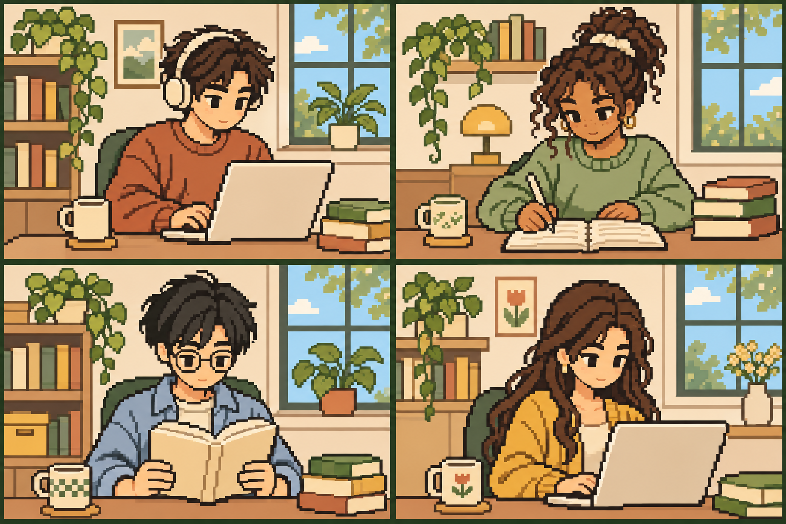
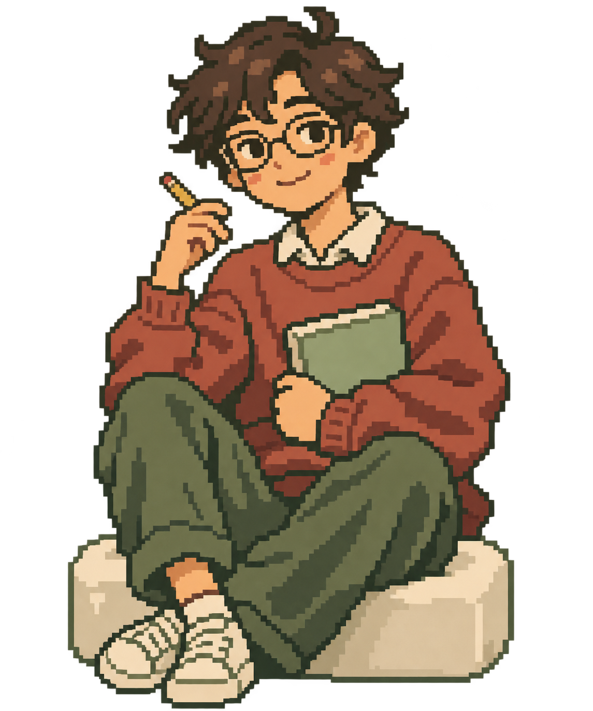
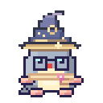
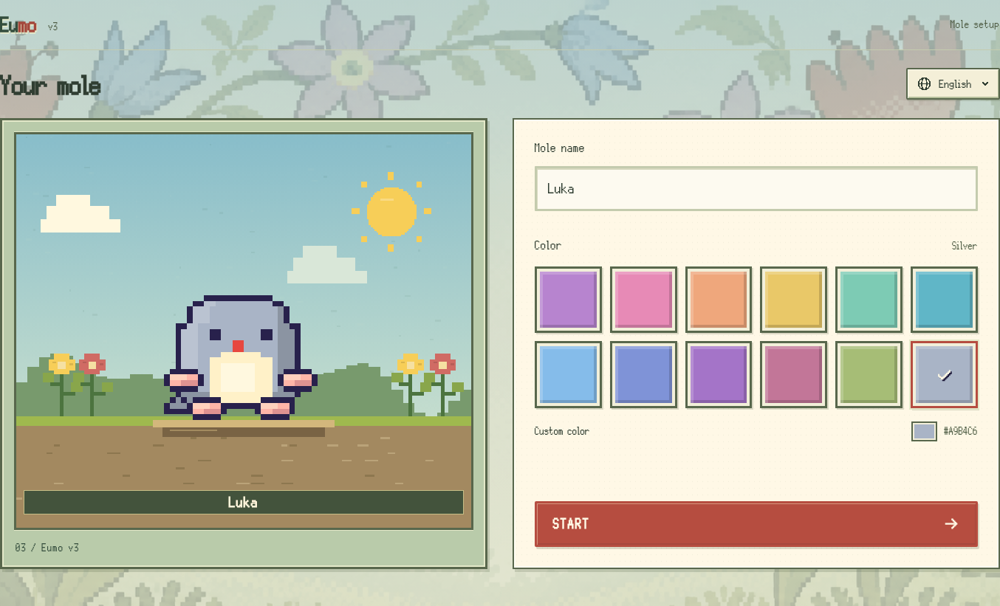

01 / PRODUCT OVERVIEWWeb · Windows · macOS
Eumo.
A focus companion.A timer, a virtual pet, and a world you make your own.
- WHO
- Young adults studying independently
- PROBLEM
- Starting and sustaining a task alone
- HOW
- Focus→ Explore → Personalize
EUMO / FOCUS
 Current product
Current product
02 / PROJECT INSPIRATION
Two sources of inspiration.
01Online co-study
Discord · Zoom · Study livestreams

Illustrative co-study sceneShared presenceMutual accountability
02Traditional electronic pets
Tamagotchi as a design reference
 Illustrated electronic-pet reference
Illustrated electronic-pet referencePersistent characterEmotional attachment
DESIGN DIRECTIONA study companion with optional human connection.
03 / RESEARCH INSIGHTS
Research into design.
PRODUCT RESPONSEOptional friend visibility
Does shared presence help people start?
Evaluation: real task progressLiterature verification pending
04 / PERSONA
Proto-persona
Alex, 20
Undergraduate student

Independent study · Laptop
USER PROFILE
Independent study.
A sense of company.
Study context
Studies on a laptop at home or in the library. Moves between readings, notes and coursework.
Goals
Start a manageable session and complete a concrete task, with company and control over the pace.
Pain points
Starting alone feels difficult. Interruptions break momentum; phone-based tools occupy the phone and use its battery.
Product needs
A persistent companion, flexible pauses and optional friend visibility. Rewards that support task progress.
JOBS TO BE DONEBegin a focused session, make progress, and return after interruptions.
05 / COMPETITIVE LANDSCAPE
Three approaches to focus.
TIME STRUCTUREPomodoro tools
Work / break intervals
CHARACTER PRESENCECat On Chair
Companion-led focus

Current Eumo artworkEumo
Focus → collection → home
POSITIONINGFlexible focus. A persistent personal world.
06 / PRODUCT WALKTHROUGH
EUMO / SETUP

Live demonstration · 6 minutes
07 / USER FEEDBACK & ITERATION
What we heard. What changed.
USER FEEDBACKIMPLEMENTED RESPONSE
EUMO / WARDROBE
 Discoveries can be exchanged for apparel.
Discoveries can be exchanged for apparel.OPEN QUESTIONStudying for outfits—or progressing on the task?Review reward timing and idle-farming risks.
Qualitative themes reported by the founder · No formal outcome data yet
08 / NEXT STEPS
Next phase: refinement.
THROUGH DECEMBERThree development workstreams
SUCCESS CRITERIONComplete core tasks without help.
Observe task success, errors and recovery.
09 / PRODUCT EXTENSIONS
Physical product extensions.
WORKING NFC PROTOTYPETap to open a link.
A physical entry point to Eumo.
COLOR / Orange TimerDigging
Next validationEveryday use · ergonomics · feasibility
10 / BUSINESS MODEL
Business model hypotheses.
01Subscription
Optional recurring value
02Cosmetics
Skins & themed worlds
03Physical products
Keychains & handheld
FREE COREFocus timer + companion
NEXT MILESTONEValidate repeat use and willingness to pay.
Open Eumo ↗ PRODUCT CASE STUDY
PRODUCT CASE STUDY